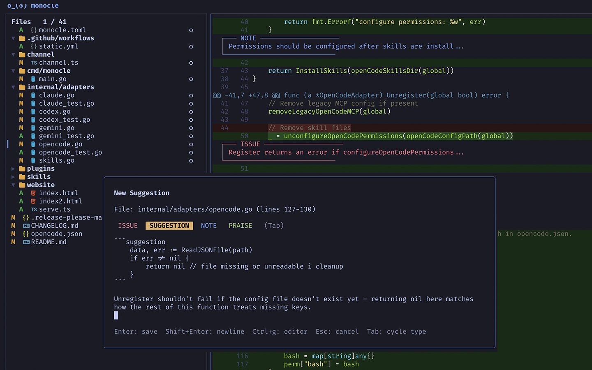

Review AI agent code as it writes
A terminal UI that runs alongside your AI coding agent. Review diffs in real time, leave line-level comments, and submit structured feedback that the agent acts on immediately.

Get started in one command
brew install josephschmitt/tap/monocle
Built for AI agent workflows
See exactly what your AI agent is changing. Review diffs, leave feedback, and guide the agent — all without leaving your terminal.
Diff review
See every file your agent changes in unified or side-by-side diff views with full syntax highlighting and intra-line diffs.
Structured feedback
Leave line-level comments — issues, suggestions, notes — then submit a structured review the agent receives and acts on.
Plan review
Review the agent's plan before it writes code. Leave feedback on the approach, then let it proceed once you're satisfied.
Multi-agent support
Works with Claude Code, Codex, Gemini CLI, and OpenCode. Register with one command and start reviewing.
Integrate in seconds
Monocle runs alongside your AI agent, giving you a dedicated terminal UI to review changes and provide feedback.
Install Monocle
Install the CLI via Homebrew or download a binary from GitHub Releases.
Register your agent
Run monocle register claude to install skills and configure your agent.
Start reviewing
Run monocle in a separate terminal to see diffs as the agent works.
Submit feedback
Leave comments on diffs, pause the agent when needed, and submit reviews it acts on immediately.
Designed for terminal purists
No Electron apps, no web dashboards. Monocle is a single binary that respects your terminal environment, keybindings, and color scheme.
- check_circle Unified and side-by-side diff views
- check_circle Nerd Font icon support
- check_circle Local communication over Unix sockets